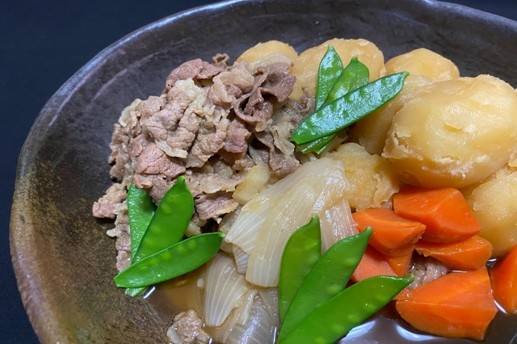

Nikujaga

Description
Ingredients:
- Vegetables (potatoes, carrots, onions)
- Sliced pork
- Soy sauce, sake, sugar, mirin, dashi
- Water
Steps:
- Cut the vegetables
- Cook and stir beef
- When the beef turned brown, add vegetables
- Add sugar and water
- Add soy sauce, sake, mirin and dashi and then simmer for 20-30 minutes